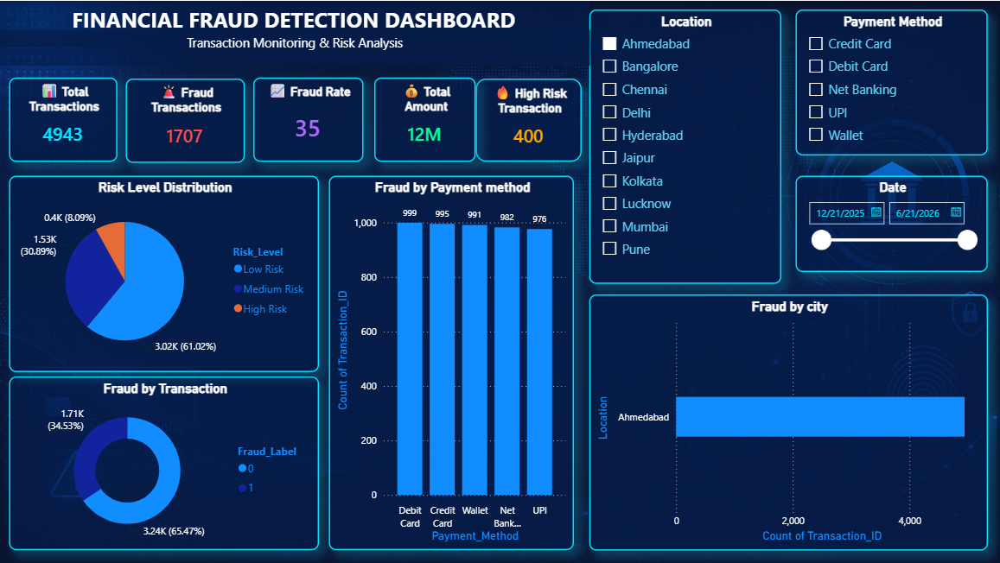
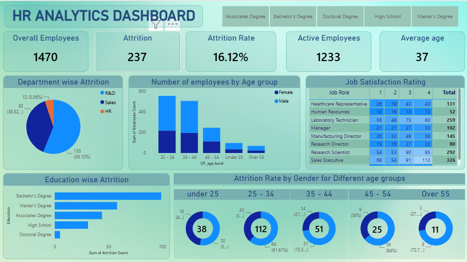
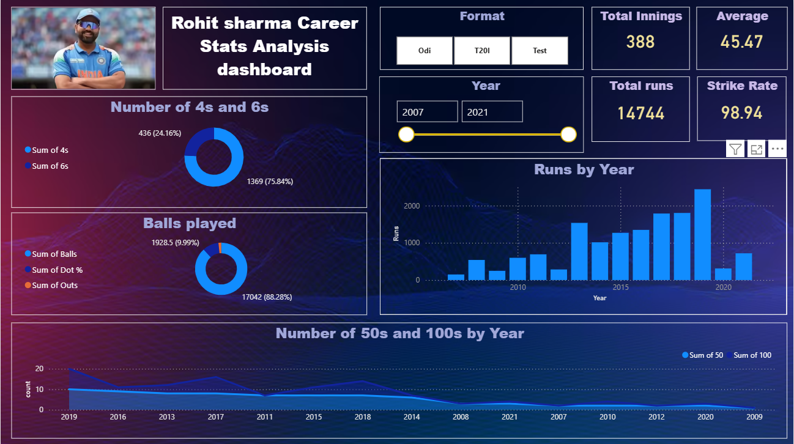

Data Analytics
Data Cleaning, Exploratory Data Analysis, KPI Analysis, Trend Analysis, Business Reporting, Data Validation
Open to Data Analyst, MIS & Reporting Opportunities
I transform raw business data into clear and actionable insights using Excel, SQL, Power BI, and Python. My work focuses on data cleaning, reporting, dashboard development, KPI tracking, and data-driven decision-making.
Get to know me
I am Priyansh Agarwal, a B.Tech graduate with nearly one year of professional experience in data analysis, reporting, performance tracking, and dashboard development. My current work has helped me build practical experience in cleaning data, monitoring performance metrics, preparing reports, identifying trends, and supporting business decisions.
Alongside my professional role, I have completed multiple end-to-end data analytics projects using Excel, SQL, Power BI, and Python. These projects cover financial fraud detection, e-commerce sales, HR analytics, ride-booking performance, and sports analytics.
I am now seeking an opportunity as a Data Analyst, MIS Executive, Reporting Analyst, or Junior Business Analyst, where I can apply analytical thinking, business understanding, and visualization skills to solve real-world problems.
What I work with
Data Cleaning, Exploratory Data Analysis, KPI Analysis, Trend Analysis, Business Reporting, Data Validation
Advanced Excel, Pivot Tables, Lookup Functions, Charts, Dashboards, Google Sheets
Interactive Dashboards, Power Query, Data Modelling, DAX, KPI Cards, Slicers, Drill-through
MySQL, Joins, Subqueries, Aggregations, CTEs, Window Functions, Data Extraction
Pandas, NumPy, Matplotlib, Data Cleaning, EDA, Basic Automation
KPI Reporting, Dashboard Design, Data Storytelling, Business Insights, Performance Monitoring
Selected work

Finance Analytics
Analyzed 50,000+ transactions to identify suspicious activity using transaction frequency, location mismatch, device behaviour, amount anomalies, and customer risk profiling.
Excel • SQL • Python • Power BI

Sales & Customer Analytics
Analyzed 7,800+ transaction records to study sales performance, customer behaviour, RFM segments, and product relationships.
Excel • SQL • Python • Power BI

People Analytics
Built an interactive dashboard to analyze employee attrition, workforce distribution, departmental trends, job roles, and employee demographics.
Power BI • Excel

Mobility Analytics
Tracked ride bookings, revenue, cancellations, customer ratings, payment methods, and vehicle-level performance through an interactive dashboard.
Power BI • Excel

Sports Analytics
Developed an interactive cricket analytics dashboard to evaluate career performance across formats, including runs, centuries, batting average, strike rate, and yearly trends.
Power BI • Excel • Data Visualization
Professional journey
January 2026 – Present
September 2025 – December 2025
Portfolio highlights
Completed projects across finance, e-commerce, HR, mobility, and sports analytics.
Published Power BI dashboards with KPIs, filters, drill-downs, and business-focused insights.
Worked across Excel, SQL, Python, and Power BI for cleaning, analysis, visualization, and reporting.
Let's connect
I am currently open to Data Analyst, MIS Executive, Reporting Analyst, and Junior Business Analyst opportunities.